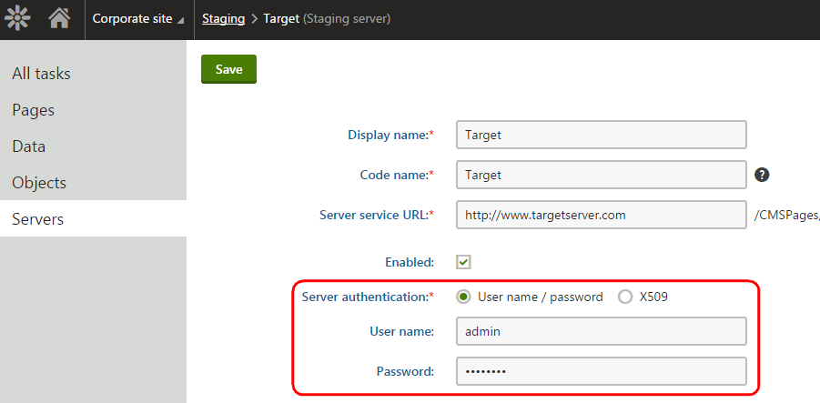
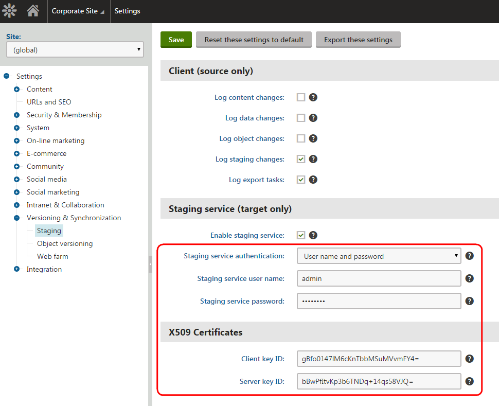

Troubleshooting staging
This page describes how to resolve the most common errors that you may encounter when using staging.
Failed staging task synchronization
Problems typically occur when the synchronization of staging tasks fails. To check your system for failed staging tasks and identify the type of error:
Open the Staging application on the source server.
Look for staging tasks that have the Failed status in the Result column.
Click Failed to view the error message details in the Synchronization log dialog.
HTTP status 404: Not Found error
Error: "
Synchronization client error: Exception occurred: The request failed with HTTP status 404: Not Found.
"
Not found errors occur in the following cases:
If the staging service URL is set incorrectly for a target server.
When attempting to stage page attachments or media library files that are too large.
Solution
Open the Staging application on the source server where the problem occurs.
On the Servers tab, edit all registered target servers.
Check that the Server service URL of each server is correct, including the domain and virtual directory (if necessary).
If you are using staging to transfer very large files, see Staging large files.
Parent node does not exist
Error: " SyncServer.ServerError: Exception occurred: [SyncManager.UpdateDocument]: Parent node does not exist, please synchronize parent node first. "
Occurs when attempting to synchronize a page whose parent or other ancestor page does not exist on the target server. Can also occur if the parent or ancestor page was created manually on the target server outside of the staging process (i.e. when the GUIDs of the pages do not match on both servers).
Solution
Synchronize all ancestor pages of the required page first. If your servers have inconsistent page GUIDs, you may need to delete the ancestor pages on the target server and synchronize the entire section from the source. You can use the Synchronize current subtree action on the Pages tab of the Staging application (see Synchronizing the content).
If possible, always avoid manual creating of pages on the target server for sections where you plan to deploy pages via staging. The correct approach is to transfer all pages via the staging service.
Incorrect staging service password
Errors:
"Synchronization client error: Exception occurred: Microsoft.Web.Services3.Security.SecurityFault: The security token could not be authenticated or authorized
. ... The computed password digest doesn't match that of the incoming username token."
Occurs when the server password on the source instance does not match the password configured for the staging service settings on the target server.
"Synchronization client error: Exception occurred: System.Web.Services.Protocols.SoapException: Server was unable to process request. ---> System.Exception: Missing X509 certificate token, please check authentication
type
"
Occurs if the server on the source instance is configured for user name and password authentication, but the target server uses X.509 authentication.
"Synchronization client error: Exception occurred: [X509ClientOutputFilter.SecureMessage]: Unable to obtain server security token ID."
Occurs if the server on the source instance is configured for X.509 authentication and the target server does not have valid X.509 configuration.
Solution
On the source instance, open the Staging application and edit your target server on the Servers tab.

Server settings on the source instanceOn the target instance, open the Settings application and select the Versioning & Synchronization -> Staging category.

Staging service settings on the target instanceVerify that the target server on the source instance and the Staging service settings on the target instance have matching authentication settings, including:
The authentication type (User name / password or X.509)
The User name and Password (for User name / password authentication)
The Client key ID and Server key ID (for X.509 authentication)
Invalid service URI
Error: "Synchronization client error: Exception occurred: Invalid URI: The format of the URI could not be determined."
URI format errors occur if the protocol
(for example http://)
is missing in the staging service URL of your target server.
Solution
Open the Staging application on the source server where the problem occurs.
On the Servers tab, edit all registered target servers.
Make sure the Server service URL of each server includes the correct protocol. For example: http://www.targetserver.com
SOAP header security not understood
Error: "Synchronization client error: Exception occurred: System.Web.Services.Protocols.SoapHeaderException: SOAP header Security was not understood."
Can occur in certain environments. This is a general error related to .NET and WSE.
Solution
Add the following to the <system.web> section in the web.config file on the target server:
<webServices> <soapExtensionImporterTypes> <add type="Microsoft.Web.Services3.Description.WseExtensionImporter, Microsoft.Web.Services3, Version=3.0.0.0, Culture=neutral, PublicKeyToken=31bf3856ad364e35" /> </soapExtensionImporterTypes> <soapServerProtocolFactory type="Microsoft.Web.Services3.WseProtocolFactory, Microsoft.Web.Services3, Version=3.0.0.0, Culture=neutral, PublicKeyToken=31bf3856ad364e35" /> <protocols> <add name="HttpSoap"/> <remove name="HttpPost" /> <remove name="HttpGet" /> </protocols></webServices>Timeout expired
Error: "The timeout period elapsed prior to completion of the operation or the server is not responding."
Timeouts may occur when synchronizing a very large number of staging tasks within a single operation. The default timeout interval is 180 seconds.
Solution
Either synchronize the tasks in smaller batches or increase the timeout interval. To increase the interval, add the CMSStagingServiceTimeout key to the configuration/appSettings section of the web.config file on the source server and set the value:
<add key="CMSStagingServiceTimeout" value="300" />HTTP status 413: Request Entity Too Large
Error: "Synchronization client error: Exception occurred: The request failed with HTTP status 413: Request Entity Too Large."
Can occur when synchronizing pages over HTTPS.
Solution
Note that it is not recommended to set the value to the maximum (2147483647) due to security reasons. Instead, determine the smallest value that the server should be allowed to read into a buffer and use that instead. The default value is 49152 bytes.
For example, the following appcmd.exe command changes the uploadReadAheadSize value to 245760 bytes.
appcmd.exe set config "Default Web Site" -section:system.webServer/serverRuntime /uploadReadAheadSize:"2147483647" /commit:apphostIncorrect relationships between objects after staging
Synchronization fails when using SSL
You may encounter problems when synchronizing staging tasks over a secured protocol (SSL). By default, the staging service only accepts certificates issued by a trusted certification authority.
To configure the system to accept all certificates, including self-signed, add the CMSStagingAcceptAllCertificates key to the configuration/appSettings section of your web.config file:
<add key="CMSStagingAcceptAllCertificates" value="true" />